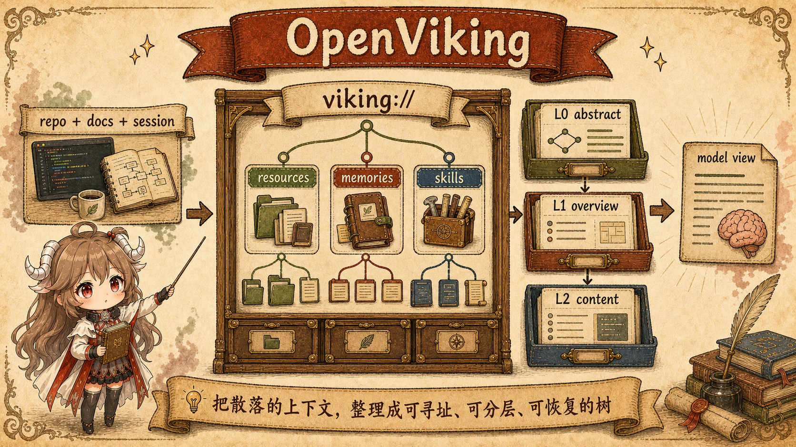

Agent Memory · OpenViking
OpenViking：当 Memory、Resource 与 Skill 进入同一棵上下文树
沿同一个 coding-agent 任务，读懂 viking:// 上下文树、L0/L1/L2、find/search、两阶段 session commit 与模型视野边界。
中文
阅读中文版
不从术语表起步，而是跟着一次报销 bug 走完资源摄取、层级检索、会话归档与长期记忆。
English Read in EnglishFollow one coding-agent task through ingestion, layered retrieval, durable session commit, and model-view assembly.
